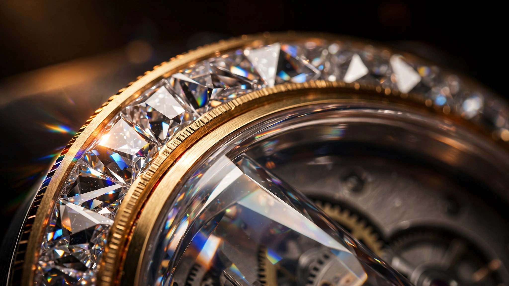

145 Diamonds, Nowhere to Hide: How Hublot Set Gems Into Sapphire Crystal

Gem setting, in its conventional form, depends on a straightforward material advantage. In conventional gem setting, the host is always softer than the tools, and that asymmetry is the whole game. A jeweler pushes gold or platinum around a diamond using hardened steel burnishers because gold and platinum yield under localized pressure, flowing just enough to grip the stone without cracking. The technique dates back centuries and the underlying physics has never changed. Deform the softer material around the harder one, and the stone stays put.
Sapphire does not yield.
Crystalline aluminum oxide, Al2O3, scores 9 on the Mohs hardness scale. Only diamond sits above it at 10, and the absolute gap between 9 and 10 is far larger than the intervals between lower numbers suggest. Sapphire resists scratching by everything except diamond itself. It cannot be deformed, bent, or cold-worked in any meaningful way. Try to push a burnisher against it and the tool skids or chips. Apply force asymmetrically and the crystal cleaves along its rhombohedral fracture planes, shattering catastrophically rather than yielding gradually. There is no middle ground between intact and destroyed, which is precisely what makes it such a hostile substrate for traditional jewelry work where the host material needs to cooperate with the setter’s tools.
Hublot decided to set 145 diamonds into it anyway.
The Impact Motif Becomes an Engineering Constraint
The Spirit of Big Bang Impact Sapphire Jewellery, unveiled at Watches and Wonders 2026 in Geneva, marks the first time in Hublot’s history that diamonds have been set directly into a sapphire crystal case. Fifty-four fancy-cut diamonds occupy the bezel and ninety-one more scatter across the dial, together extending the “Impact” motif that Hublot introduced in 2016 with the Big Bang Impact Bang, a visual language of fragmented shards radiating outward from a central point, as though the watch had survived a controlled detonation and frozen the debris field in place.
Fancy-cut is the critical qualifier here. Round brilliant diamonds follow standardized proportions established by Marcel Tolkowsky in 1919, refined over the following century into the GIA’s modern cut grading system, where a well-cut 57-facet round brilliant is geometrically predictable enough that setting channels can be pre-machined to standard dimensions. A 1.00-carat round brilliant measures approximately 6.5mm in diameter with a depth of roughly 3.9mm, give or take tenths that fall within tolerance ranges jewelers have accommodated for generations.
Fancy cuts abandon that predictability entirely. Marquise, pear, kite, trapezoid, shield, and freeform shapes all qualify, and the Impact motif demands an apparently random arrangement of angular shards with no two stones sharing the same outline. Every diamond in the set has a different footprint, and every mount must accommodate that specific shape precisely. In gold or platinum, this means careful but ultimately forgiving hand work, where a skilled setter adjusts the metal as they go. In sapphire, every channel, every seat, every retaining geometry must be correct before the stone arrives, because sapphire offers no second chances. Machine it wrong and the case goes to scrap.
Laser Machining at the Limits of Transparency
Hublot machines sapphire cases from single crystals of synthetic corundum grown by the Verneuil flame-fusion or Kyropoulos process, where aluminum oxide powder is melted at approximately 2,050°C and slowly cooled into cylindrical boules weighing several hundred grams. We covered the general sapphire case machining process in detail previously. What matters here is the additional complexity of cutting channels into a finished case that must remain optically transparent after the work is done.
The channels for the bezel diamonds are cut using ultrashort-pulse laser ablation, a process that removes material in femtosecond or picosecond bursts, each pulse depositing enough energy to sublimate a microscopic volume of sapphire without heating the surrounding crystal lattice enough to cause thermal stress cracking, the same failure mode that makes conventional diamond grinding on thin sapphire sections so dangerous. A conventional CNC diamond grinder applies continuous pressure along a cutting path and generates heat through friction. On a thick sapphire case blank where material surrounds the tool on all sides and conducts heat away efficiently, that works. On a bezel with channels that reduce cross-sections to a few millimeters, the thermal gradient between the cut zone and the adjacent crystal concentrates stress precisely where the wall is thinnest. Fracture follows.
Laser ablation avoids this by removing material without mechanical contact. Each pulse lasts between 10-15 and 10-12 seconds, vaporizing sapphire at the focal point while the surrounding material sees essentially zero thermal input. The trade-off is speed: laser ablation of sapphire removes material orders of magnitude slower than mechanical grinding, and each channel must be cut in multiple passes, deepening incrementally until the seat geometry matches the three-dimensional profile of its assigned diamond. For 54 bezel channels with individually adapted profiles, the machining time accumulates rapidly.
After cutting, the channels require polishing to restore optical clarity. Raw laser-ablated sapphire surfaces are microscopically rough, with resolidified debris and sub-surface damage from the ablation plume. On an opaque case this would be invisible. On a transparent one, every imperfection scatters light and clouds the material. Hublot polishes each channel with diamond-impregnated micro-tools at sub-millimeter scale, restoring the optical clarity that justifies using sapphire in the first place. Skip this step and the case looks frosted where it should look like glass.
Gold as Structural Intermediary
Diamonds do not sit directly against sapphire. Between each stone and the sapphire channel walls, Hublot inserts polished gold framing strips that serve as the actual retention mechanism. Two gold strips run along each channel, creating a sandwich: sapphire wall, gold strip, diamond, gold strip, sapphire wall. The gold is malleable enough to conform to the diamond’s faceted edges under setting pressure, gripping the stone the way a traditional bezel setting would, while the sapphire channel constrains the gold from moving outward under stress.
This three-layer architecture solves the fundamental compatibility problem. Sapphire cannot deform to grip a diamond. Gold can. But unsupported gold is too soft to retain a diamond under the vibrations and impacts of daily wear, especially on a 42mm wrist-worn object. The sapphire channel walls act as a rigid exoskeleton for the gold, preventing it from spreading under load while the gold provides the compliant contact surface that sapphire cannot. Neither material works alone, but together they create a retention system that neither could achieve independently, a structural principle borrowed more from composite engineering than from traditional jewelry, where the stiff outer shell and compliant inner layer each contribute what the other lacks.
Each assembly is irreversible. Once a diamond is pressed into its gold-lined sapphire channel, the stone cannot be removed without destroying the gold strips and potentially fracturing the channel walls. Traditional precious metal settings allow stones to be reset; this does not. The commitment is total, which puts extraordinary pressure on quality control upstream. Every diamond must be verified against its assigned channel geometry before setting. Every gold strip must be pre-formed to match both the channel width and the stone’s edge profile. A dimensional mismatch of tens of microns at any interface can mean a stone that rattles under vibration or a gold strip that buckles during pressing. There is no adjustment after the fact.
Osmium: Denser Than Platinum, Rarer Than Everything
The second sapphire variant in the Impact collection replaces diamonds with something stranger. Crystallized osmium shards alternate with rhodium-plated appliques across the dial, producing a blue-silver surface that catches light in a way no other metal does. Limited to 30 pieces at CHF 95,000, it sits at roughly one-fifth the price of the Sapphire Jewellery edition and trades one category of extreme rarity for another.
Osmium occupies a peculiar position among elements, straddling the line between laboratory curiosity and luxury commodity. Atomic number 76, a platinum group metal, it is the densest naturally occurring element at 22.59 g/cm3, roughly twice the density of lead and significantly denser than gold at 19.32 g/cm3. In raw sponge form, osmium is genuinely hazardous because exposure to air produces osmium tetroxide, OsO4, a volatile compound that attacks mucous membranes and corneas at concentrations below 1 ppm, making it emphatically not a material you want against skin.
Crystallization changes everything, though. A process developed in Switzerland around 2013-2014, kept proprietary in its details but documented in its results, purifies osmium sponge and transforms it into a stable crystalline form that is chemically inert and safe for handling. The crystallization takes place at high temperatures under controlled atmospheric conditions, producing flat discs with surfaces that look like miniature mountain ranges under magnification. Each crystal surface is topographically unique at the microscopic level, creating what amounts to an unforgeable physical fingerprint. Every piece is 3D-scanned and registered in the Osmium World Database maintained by the German Osmium Institute, which assigns an identification code tied to the scan.
Only about 120 kilograms of crystalline osmium are produced annually worldwide, all of it recovered as a byproduct of platinum mining. Thirty grams of osmium emerge from 10,000 tonnes of platinum ore. As of mid-2025, crystalline osmium traded at approximately $2,400 per gram, roughly 20 times the price of gold by weight. Less than half a tonne of osmium remains to be crystallized from known reserves, and since no one mines osmium directly, supply declines as platinum mining declines.
Hublot first introduced crystallized osmium into watchmaking in 2014, predating other luxury brands by years. The Spirit of Big Bang Impact Sapphire uses osmium shards cut from crystallized discs by electrical discharge machining (EDM), a process that shapes the brittle metal without the mechanical stress that would fracture it, and mounts them as dial appliques alternating with polished rhodium-plated elements. The visual result exploits osmium’s natural bluish radiance, a surface reflectance property unlike any other metal, to create depth contrasts that shift as light angle changes.
All Black at Twenty: Ceramic as Anti-Transparency
The third Impact variant takes the opposite approach to visibility. Black ceramic case, black ceramic bezel, black-plated appliques, black Super-LumiNova, black hands. The All Black concept, which Hublot introduced in 2006 and described as “invisible visibility,” celebrates its twentieth anniversary in this collection with a 100-piece edition at CHF 28,000.
Where the sapphire editions demand transparency as proof of engineering prowess, the All Black demands its absence. The bezel is engraved with the Impact shard motif rather than set with stones, creating a textural pattern visible only under raking light that catches the transition between microblasted and polished ceramic surfaces. This is the easiest of the three variants to manufacture, though “easy” is relative when you are engraving angular fragmented patterns into zirconium oxide ceramic with Vickers hardness around 1,300 HV, several times harder than surgical stainless steel. The ceramic is the same high-tech formulation Hublot developed for its colored ceramic program using spark plasma sintering, with hardness approximately 300 Vickers above conventional ceramic watch cases, per the company’s specifications for the Big Bang Reloaded line.
HUB1770: A Movement Shaped by Its Case
All three Impact editions share the HUB1770 automatic skeletonized caliber, a movement whose barrel-shaped architecture was designed specifically to fill the tonneau case of the Spirit of Big Bang collection. Conventional round calibers leave dead space in tonneau cases, visible gaps between the circular movement and the non-circular case walls that must be masked with dial elements or bridge extensions. Hublot avoided this by shaping the HUB1770’s plates and bridges to follow the case contour, filling the available volume and making the movement itself part of the visual architecture.
Running at 4 Hz (28,800 vibrations per hour), it stores 50 hours of power reserve and drives two complications: a moonphase display at 6 o’clock and a big date at 1 o’clock. Its 288-component, 27-jewel architecture is skeletonized extensively enough that light passes through the movement on the sapphire editions, meaning every bridge, screw head, and spring visible through the transparent case must be finished to exhibition grade. No hidden surfaces exist when your case material conceals nothing.
On the Sapphire Jewellery edition, this total exposure creates an unusual aesthetic tension. Diamonds scatter light across the bezel and dial while the skeletonized movement beneath remains fully legible through the remaining transparent sapphire sections. Hour, minute, and small seconds hands carry strips of Super-LumiNova to maintain readability against the diamond field, a concession to function that reveals how far the design pushed toward pure visual spectacle before someone in the development process said “but people need to tell time.”
Limitations Worth Stating
I have not handled any of these watches. My analysis is based on published specifications, press photography, and comparisons with Hublot’s documented sapphire machining capabilities from prior references. Several engineering questions remain open that would strengthen or challenge this reading. Hublot has not published the specific laser ablation parameters used for channel cutting, whether they use femtosecond, picosecond, or nanosecond pulse durations, or the focal spot diameter employed. The gold channel architecture is described only in general terms, and the exact alloy composition, strip thickness, and setting pressure are not disclosed. Nor has the company published quantitative data on retention force under impact or vibration testing, which would be necessary to evaluate long-term security of the diamond setting against the EN ISO 2062 retention standards typically applied to precious stone settings in wristwatches.
Water resistance tells its own story. Both sapphire variants are rated to 50 meters (5 ATM), compared to 100 meters for the All Black ceramic edition. Sapphire cases inherently compromise gasket sealing because the brittle material cannot compress under gasket pressure the way a ductile metal or even a ceramic can, and adding laser-machined channels to the bezel further reduces the available sealing surface. Fifty meters is adequate for splash resistance but rules out swimming or immersion, a functional trade-off that buyers of half-million-franc watches presumably accept.
The 20-piece limitation on the Sapphire Jewellery edition may itself be an engineering constraint rather than a purely commercial scarcity play. If each case genuinely requires hundreds of hours of laser machining and individual channel adaptation for 145 unique diamonds, annual production capacity is physically limited by machine time regardless of market demand, a bottleneck familiar from Hublot’s own history with full-sapphire bracelet watches where the Big Bang Integral Tourbillon Full Sapphire required over 600 hours of machining per bracelet.
What It Means
Hublot has spent a decade building the manufacturing infrastructure to treat sapphire as a structural watchmaking material rather than a window. Cases, bracelets, bridges, colored sapphire, and now gem-set sapphire, each iteration compounds the institutional knowledge. Setting diamonds into sapphire is not a gimmick layered onto an existing capability. It extends the material’s role from passive container to active participant in the decorative program, which requires mastering new failure modes, new tooling, and new retention engineering that traditional high-jewelry watchmaking never needed to solve.
Whether that engineering is worth CHF 450,000 is a question for collectors who have already decided that material innovation matters as much as dial design or movement finishing. What is not debatable is the manufacturing difficulty. No other watchmaker has done this, and the reason is not lack of imagination. It is that sapphire actively resists the work, and most companies concluded the effort was not worth the yield losses. Hublot disagreed, committed hundreds of hours per case, and produced twenty of them.
Stubbornness as a manufacturing strategy, and one that has worked before.
Specifications
| Detail | Sapphire Jewellery | Sapphire (Osmium) | All Black |
|---|---|---|---|
| Reference | 647.JX.9000.RW.1904.IMP26 | 647.JX.0106.RW.IMP26 | 647.CX.0140.RX.IMP26 |
| Case | 42mm x 15.5mm, polished sapphire crystal | 42mm x 14.25mm, polished sapphire crystal | 42mm x 14.6mm, microblasted and polished black ceramic |
| Bezel | 54 fancy-cut diamonds in laser-machined sapphire channels with gold framing | Polished sapphire crystal | Engraved Impact motif in black ceramic |
| Dial | 91 fancy-cut diamond appliques | Rhodium-plated and osmium shard appliques | Polished black-plated shard appliques |
| Movement | HUB1770 automatic skeletonized, 288 components, 27 jewels, 4 Hz, 50-hour power reserve | ||
| Complications | Moonphase (6 o’clock), big date (1 o’clock), small seconds | ||
| Water resistance | 50m | 50m | 100m |
| Limitation | 20 pieces | 30 pieces | 100 pieces |
| Price | CHF 450,000 | CHF 95,000 | CHF 28,000 |